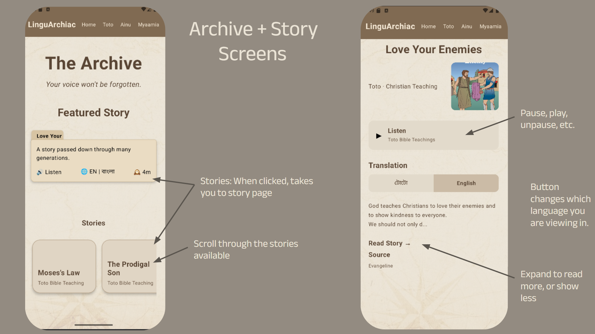

ORAL HISTORY ARCHIVE
Archive & Story Collection.

Archive: The archive is a collection of stories. There is a featured story in each "Language Specific Screen". The user can scroll through other stories and select a story, leading them to the "Story Screen". Story: In each story, you can find an image related to the story, a short context and/or description, an audio (except Myaamia), and the story transcription in English and in the common Language. You can choose to view less or more, and switch between languages.